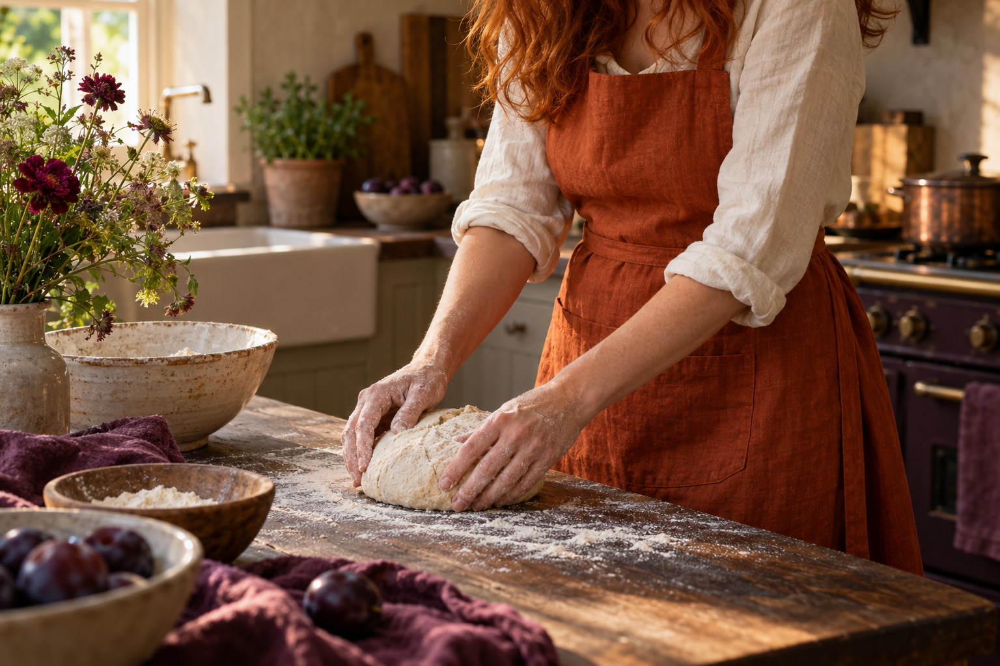

Pockets with purpose
Space for the little things you reach for, so you can keep doing what you love.
FOR THE JOY OF MAKING
A pinch of flour. A splash of colour. An apron with a little personality, for whatever you’re making today.
Find your Ginger
THE FIRST IDEAS
Three directions for the first Ginger collection.
A little something for every kind of maker.
IN THE MAKING / THE EVERYDAY
The starting idea: an easy, full-length apron in a warm ginger shade. Room for a tea towel, a recipe and whatever the day brings.
A first collection is taking shape.
These are colour and style concepts,
with final fabrics and fit still to come.
A NAME WITH A LITTLE FIRE
Ginger started with a simple idea: making aprons that bring a little more joy to the things we already love doing.
The name? A nod to the redhead behind it, and the spice that makes ordinary things a little more interesting.
It’s an idea growing one stitch at a time. Something useful. Something personal. Something worth putting your heart into.
GOOD THINGS ARE IN THE DETAILS
Space for the little things you reach for, so you can keep doing what you love.
An easy fit and ties that make it yours. An apron should feel like part of your day.
Rich colour, simple shapes and thoughtful details. Practical needn’t mean plain.
SOMETHING LOVELY IS STARTING
This is ours. The first Ginger collection is in the making.
Explore the first ideas